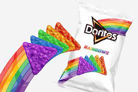
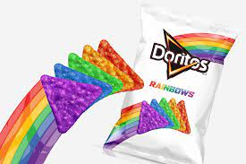

Nao sei pq mas se eu tiro isso daqui o codigo quebra
Conheça os diferentes sabores que o Doritos já teve durante a sua história
Selecione uma botão e descubra os diferentes sabores

 


Para encorajar as pessoas a decidirem entre o “Homem-Morcego” e o “Homem de Aço”, a marca promoveu a iniciativa “Escolha Seu lado”, com lançamento de duas edições especiais da tortilha. A versão “Jalapeño e Limão” vem com embalagem temática do Batman, enquanto os pacotes de “Queijo temperado” trazem elementos com referência ao Superman.
A embalagem não diz qual o sabor dessas versões. Há duas opções Doritos Mystery, a diferenciação fica por conta da embalagem: preta e a outra branca. Tente descobrir os sabores.
Com o slogan "Não há nada mais corajoso do que ser você mesmo". Há salgadinhos das cores verde, azul, roxo, amarelo, vermelho e laranja - inspiradas na bandeira do orgulho LGBT. Essa é a primeira vez que a marca apoia a igualdade LGBT (Lésbicas, Gays, Bissexuais, Travestis e Transexuais) e contou com a ajuda do projeto It Gets Better, que tem como missão inspirar e dar suporte aos jovens gays em todo o mundo, mostrando ações positivas.
As embalagens contêm o que parecem ser nachos de queijo normais. Mas, aproximadamente um a cada seis salgadinhos é super apimentado, apesar de ser igual aos outros na aparência. Tente a sorte com seus amigos e veja eles queimarem sua língua.